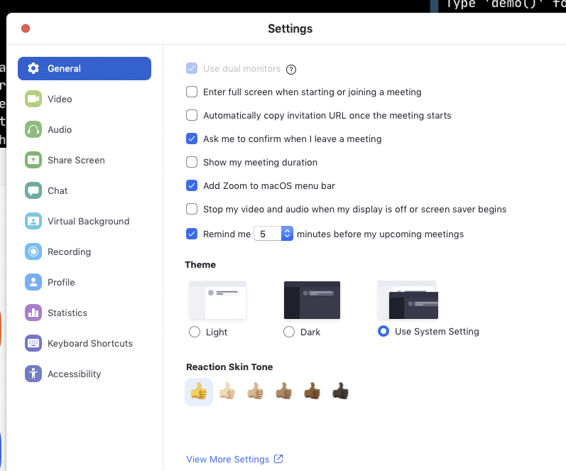

Having a great online learning experience: a guide for students
With the advent of COVID-19 we’re all having to do the unthinkable, which for an instructor like me means moving hands-on, practical coding workshops online. In this post, I’ll outline a few key things you can do as a learner to have what is hopefully the best possible experience attending synchronous online training.

1. Follow your instructor’s instructions
Install all the things - and test them
First and foremost, triple-check that you have installed everything your instructor has suggested, and tested - as much as you know how to - that it works. There are a plethora of online learning tools and platforms out there, and chances are that your instructor would have told you to install a whole bunch of stuff. For example, we use Zoom, Google Docs, and Microsoft Teams in addition to the “normal” R + packages/python + libraries in our classes! - that’s a lot of stuff to install and set up!
Versions matter!
Make sure you check which versions of particular tools or software packages your instructors need you to have. Note: it’s almost always prudent to update to the latest ones, since this is often what your instructors will test with (unless they have explicitly specified not to!).
Don’t panic - let your instructor know ASAP
If you have an older machine, can’t update some packages OR are getting errors:
- Don’t panic!
- Google the error: solve it if you can, or copy the links to the top hits if the proposed solutions make no sense to you.
- Let your instructors/TAs know as soon as possible, for example via email. Attach a screenshot of the error, and a link to any Google stuff you found - this will help them solve the problem faster.
- If you’re working on an older machine and can’t get the things you need working: if you email them your instructors will know in advance. This means they may be able to provide you with access to Google Colab or RStudio Cloud or another platform, where you are likely to be able to do most if not all of the things - but these require advanced setup, so it’s very helpful to give your instructor a heads up!

2. Setup your setup
Use headphones with a mic (if you can)
If at all possible, try to use a pair of USB or Bluetooth headphones, ideally with a built-in mic (less essential), over trying to talk and especially listen over computer audio. Working from home for the past week, I’ve had countless occasions of chatty operators of deafening leaf blowers, friendly neighbours who speak to each other over three fences, and crying toddlers (my contribution to the fray) - all during important meetings where I needed to hear and occasionally speak. My in-ear Apple Airpods were a lifesaver - and my older wired headphones would have worked just as well! Wearing noise cancelling headphones OVER Airpods was my personal lifehack against that leaf-blower - although remember that this affects the mic if you need to speak!
Use two screens (if you can)
In a workshop that involves live coding you’ll want to have you instructor’s video open as well as some place on your local machine that you’re following along and reproducing their code. In the case of R and python this can be especially challenging, as you’d normally want to use and IDE like RStudio or the Jupyter notebook or VSCode, all of which take a lot of screen real estate. Your instructor may also be using one of these IDEs for teaching, which means if you shrink their video too much you won’t be able to see what you’re typing! So if at all possible - use two screens: one for video, and one for coding.
If you don’t have a secondary monitor, there are a few things you can still do. First, you can use a tablet, such as an iPad, or even a mobile phone (if it has a big screen) to show your instructor’s video, as you code along on your primary machine. This will be especially helpful if you’ve got a small-screen laptop. Second, you can tweak some settings in your video conferencing tool of choice, outlined below, to help you make the most of the screen real estate you do have!
Tweak your Zoom
Note: These instructions are for Zoom, but from what I’ve seen of Cisco Webex, Microsoft Teams and other tools, most of this applies too:
- Don’t enter full-screen by default when joining a meeting. You can configure this in the Zoom Settings tab. This will allow you to have your instructor’s video on 1/2 of your screen, and your own code on the other half.

- Make sure you are always muted by default when you join a meeting, and can selectively unmute!
This prevents you from accidentally interrupting your instructor - or having your co-learners listen in on a personal conversation!
- Use a virtual background
If you’d like (and can - this feature requires some processing power), zoom can hide the room behind you with a virtual background. This can conceal partners, kids, pets and piles of laundry - although it’s not magic, so you will have to fold it eventually.

3. Test your setup!
Most online meeting tools will allow you to have a meeting with yourself, or to join a test meeting. It’s great to try this the night before the workshop, at the latest, as you set up your workspace. Here is a link for how to do this in zoom.
For the programming tools, try opening them and seeing what start-up messages are printed. If there’s a warning or something doesn’t look right or hangs it might be helpful to reach out to your instructor.

4. Set up for notes
Think about how you plan to take notes. In a face to face class, it’s usually easy to have a note-taking app open on your computer, but with the extra windows that you’ll have open with digital teaching, it might be a bit much to try to switch windows all the time. Consider whether you’d prefer to take paper notes, or use a tablet or other secondary device for note-taking instead.

5. Make sure to note the norms
At the beginning of class your instructor will most likely introduce the norms of behaviour:
- How do you ask questions?
- Raise your hand to volunteer to answer?
- Ask for and get help?
- Communicate with other learners?
Make sure to pay attention to this bit, since - just like an airplane - different instructors will use the same tools differently sometimes, and you don’t want to use the “Hand up” feature for 2 hours waiting for someone to help you if you were supposed to paste into the chat instead.
I hope the above check-list is helpful for you as you prepare to jump into learning online! Please leave a comment below if I’ve missed something or something is not clear.